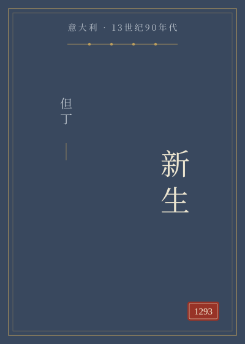
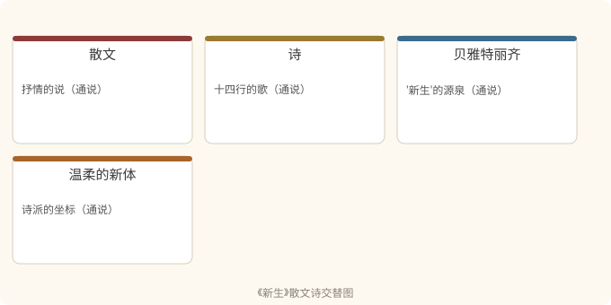

新生
一、基本信息
| 作者 | 但丁 |
|---|---|
| 成书/出版 | 约1293年（作者页注记：Britannica 列举——新生（约1293）——抒情诗集） Dante Alighieri — Encyclopaedia Britannica（百科全书） |
| 国别/地区 | 意大利 |
| 时代 | 古代 · 13世纪90年代 |
| 体裁 | 诗文合集 |
| 语言 | 意大利语（俗语） |

《新生》散文诗交替图（主题·结构图）
二、创作背景
作者页注记：新生（约1293）、论俗语——'抒情诗集与俗语理论（Britannica 列举）'。
Britannica：但丁——《神曲》作者（作者页交叉）。
题材（通说待核）：贝雅特丽齐的三十一节'新生'——散文与十四行诗的交替。
三、内容脉络
（通说待核）散文'说'与诗歌的交替：爱情书（libello）。
（通说待核）贝雅特丽齐之死与'新见'（又一说：novissimo——细节待核）。
四、主要人物表
| 人物 | 身份 | 说明 |
|---|---|---|
| 但丁（叙述者） | 诗人 | （通说待核） |
| 贝雅特丽齐 | 受爱者 | （通说待核） |
五、主题与艺术特点
- '温柔的井'（dolce stil novo——通说待核）。
- 散文与诗的交替（B注记：抒情诗集）。
- '爱'的神学化（通说待核）。
六、影响与评论
- Britannica：'抒情诗集与俗语理论'（作者页注记）。
Dante Alighieri — Encyclopaedia Britannica（百科全书） - Britannica：《神曲》的先声（作者页交叉）。
Dante Alighieri — Encyclopaedia Britannica（百科全书）
七、阅读建议
难点
- '温柔的新体'诗派。
- 散文与诗的交替结构。
- 《新生》中译本（人民文学等——通说待核）。
- 意大利文原版（公有领域）。
《神曲》前的自传性预演。
八、待核实
- 篇目数（31/42章说）核对（通说）。
- 约1293年成书待核。
- 贝雅特丽齐细节待核。